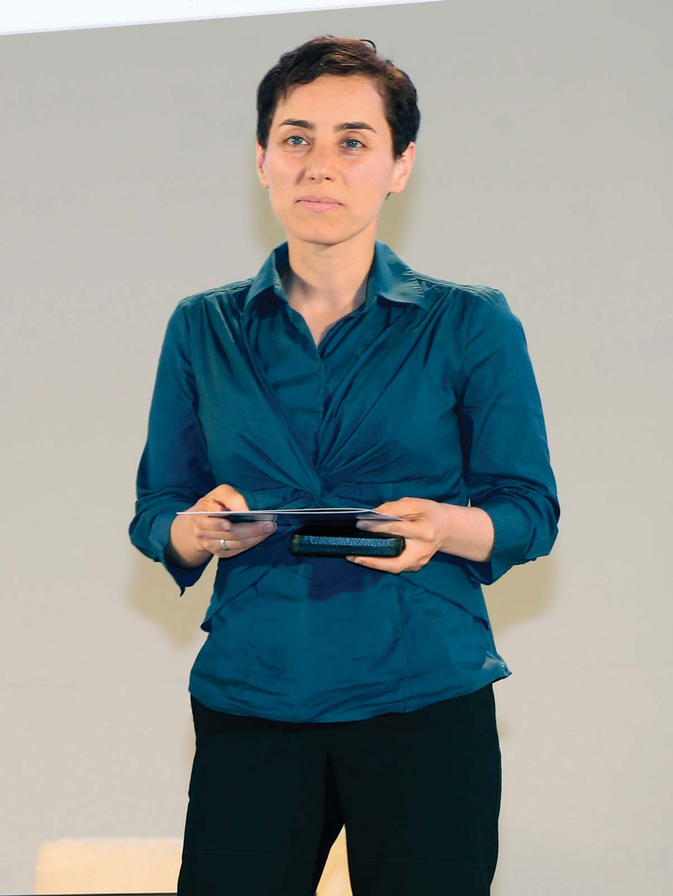

Maryam Mirzakhani
Maryam Mirzakhani ( 03 May 1977 – 14 July 2017) was an Iranian mathematician and a professor of mathematics at Stanford University. Her research topics included Teichmüller theory, hyperbolic geometry, ergodic theory, and symplectic geometry. In 2005, as a result of her research, she was honored in Popular Science's fourth annual "Brilliant 10" in which she was acknowledged as one of the top 10 young minds who have pushed their fields in innovative directions. On 13 August 2014, Mirzakhani was honored with the Fields Medal, the most prestigious award in mathematics. Thus, she became both the first, and to date, the only woman and the first Iranian to be honored with the award. The award committee cited her work in "the dynamics and geometry of Riemann surfaces and their moduli spaces". On 14 July 2017, Mirzakhani died of breast cancer at the age of 40
Early life and education
Mirzakhani was born on 12 May 1977in Tehran, Iran. As a child, she attended Tehran Farzanegan School, part of the National Organization for Development of Exceptional Talents (NODET). In her junior and senior year of high school, she won the gold medal for mathematics in the Iranian National Olympiad, thus allowing her to bypass the national college entrance exams.In 1994, Mirzakhani achieved the gold medal level in the International Mathematical Olympiad in Hong Kong, scoring 41 out of 42 points. She was the first female Iranian student to do so. The following year, in 1995, she became the first Iranian student to achieve a perfect score and to win two gold medals in the International Mathematical Olympiad held in Toronto.Later in her life, she collaborated with friend, colleague, and Olympiad silver medalist, Roya Beheshti Zavareh, on their book Elementary Number Theory, Challenging Problems which was published in 1999. Mirzakhani and Zavareh together were the first women to compete in the Iranian National Mathematical Olympiad and won gold and silver medals respectively in 1995. On 17 March 1998, after attending a conference consisting of gifted individuals and former Olympiad competitors, Mirzakhani and Zavareh, along with other attendees boarded a bus in Ahvaz en route to Tehran. The bus was involved in an accident wherein it fell off a cliff, killing seven of the passengers—all Sharif University students. This incident is widely considered to be a national tragedy in Iran. Mirzakhani and Zavareh were two of the few survivors. In 1999, she obtained a Bachelor of Science in mathematics from the Sharif University of Technology. During her time there, she received recognition from the American Mathematical Society for her work in developing a simple proof for a theorem of Schur. She then went to the United States for graduate work, earning a PhD in 2004 from Harvard University, where she worked under the supervision of the Fields Medalist Curtis T. McMullen. At Harvard she is said to have been "distinguished by ... determination and relentless questioning". She used to take her class notes in Persian.
career
Mirzakhani was a 2004 research fellow of the Clay Mathematics Institute and a professor at Princeton University. In 2009, she became a professor at Stanford University.
Research work
Mirzakhani made several contributions to the theory of moduli spaces of Riemann surfaces. Mirzakhani's early work solved the problem of counting simple closed geodesics on hyperbolic Riemann surfaces by finding a relationship to volume calculations on moduli space. Geodesics are the natural generalization of the idea of a "straight line" to "curved spaces". Slightly more formally, a curve is a geodesic if no slight deformation can make it shorter. Closed geodesics are geodesics which are also closed curves—that is, they are curves that close up into loops. A closed geodesic is simple if it does not cross itself. A previous result, known as the "prime number theorem for geodesics", established that the number of closed geodesics of length less than {\displaystyle L}L grows exponentially with {\displaystyle L}L – it is asymptotic to {\displaystyle e^{L}/L}{\displaystyle e^{L}/L}. However, the analogous counting problem for simple closed geodesics remained open, despite being "the key object to unlocking the structure and geometry of the whole surface," according to University of Chicago topologist Benson Farb.[30] Mirzakhani's 2004 PhD thesis solved this problem, showing that the number of simple closed geodesics of length less than {\displaystyle L}L is polynomial in {\displaystyle L}L. Explicitly, it is asymptotic to {\displaystyle cL^{6g-6}}{\displaystyle cL^{6g-6}}, where {\displaystyle g}g is the genus (roughly, the number of "holes") and {\displaystyle c}c is a constant depending on the hyperbolic structure. This result can be seen as a generalization of the theorem of the three geodesics for spherical surfaces. Mirzakhani solved this counting problem by relating it to the problem of computing volumes in moduli space—a space whose points correspond to different complex structures on a surface genus {\displaystyle g}g. In her thesis, Mirzakhani found a volume formula for the moduli space of bordered Riemann surfaces of genus {\displaystyle g}g with {\displaystyle n}n geodesic boundary components. From this formula followed the counting for simple closed geodesics mentioned above, as well as a number of other results. This led her to obtain a new proof for the formula discovered by Edward Witten and Maxim Kontsevich on the intersection numbers of tautological classes on moduli space. Her subsequent work focused on Teichmüller dynamics of moduli space. In particular, she was able to prove the long-standing conjecture that William Thurston's earthquake flow on Teichmüller space is ergodic.[34] One can construct a simple earthquake map by cutting a surface along a finite number of disjoint simple closed geodesics, sliding the edges of each of these cut past each other by some amount, and closing the surface back up. One can imagine the surface being cut by strike-slip faults. An earthquake is a sort of limit of simple earthquakes, where one has an infinite number of geodesics, and instead of attaching a positive real number to each geodesic one puts a measure on them. In 2014, with Alex Eskin and with input from Amir Mohammadi, Mirzakhani proved that complex geodesics and their closures in moduli space are surprisingly regular, rather than irregular or fractal.[35][36] The closures of complex geodesics are algebraic objects defined in terms of polynomials and therefore they have certain rigidity properties, which is analogous to a celebrated result that Marina Ratner arrived at during the 1990s.[36] The International Mathematical Union said in its press release that "It is astounding to find that the rigidity in homogeneous spaces has an echo in the inhomogeneous world of moduli space."
Personal life
In 2008, Mirzakhani married Jan Vondrák, a Czech theoretical computer scientist and applied mathematician who currently is an associate professor at Stanford University. They have a daughter named Anahita. Mirzakhani lived in Palo Alto, California. Mirzakhani described herself as a "slow" mathematician, saying that "you have to spend some energy and effort to see the beauty of math." To solve problems, Mirzakhani would draw doodles on sheets of paper and write mathematical formulas around the drawings. Her daughter described her mother's work as "painting". She declared:
I don't have any particular recipe [for developing new proofs] ... It is like being lost in a jungle and trying to use all the knowledge that you can gather to come up with some new tricks, and with some luck, you might find a way out.
Death and legacy
Mirzakhani was diagnosed with breast cancer in 2013.In 2016, the cancer spread to her bones and liver, and she died on 14 July 2017 at the age of 40 at Stanford Hospital in Stanford,California. Iranian president Hassan Rouhani and other officials offered their condolences and praised Mirzakhani's scientific achievements. Rouhani said in his message that "the unprecedented brilliance of this creative scientist and modest human being, who made Iran's name resonate in the world's scientific forums, was a turning point in showing the great will of Iranian women and young people on the path towards reaching the peaks of glory and in various international arenas. Upon her death, several Iranian newspapers, along with Iranian President Hassan Rouhani, broke taboo and published photographs of Mirzakhani with her hair uncovered, a gesture that was widely noted in the press and on social media. Mirzakhani's death has also renewed debates within Iran regarding matrilineal citizenship for children of mixed-nationality parentage; Fars News Agency reported that, on the heels of Mirzakhani's death, 60 Iranian MPs urged the speeding up of an amendment to a law that would allow children of Iranian mothers married to foreigners to be given Iranian nationality, in order to make it easier for Mirzakhani's daughter to visit Iran. Plaque for Mirzakhani Hall in Isfahan Numerous obituaries and tributes were published in the days following Maryam Mirzakhani's death. As a result of advocacy carried out by the Women's Committee within the Iranian Mathematical Society (Persian: کمیته بانوان انجمن ریاضی ایران), the International Council for Science has agreed to declare Maryam Mirzakhani's birthday, 12 May, as International Women in Mathematics Day in respect of her memory. Various establishments have also taken after Mirzakhani's namesake in honor of her life and achievements. In 2017, Farzanegan High school – the high school Mirzakhani formerly attended – named their amphitheater and library after her. Additionally, Sharif University of Technology, the institute wherein Mirzakhani obtained her bachelors, has since named their main library in the College of Mathematics after her. Further, the House of Mathematics in Isfahan, in collaboration with the Mayor, named a conference hall in the city after her. In 2014, students at the University of Oxford founded the Mirzakhani Society, a society for women and non-binary students studying Mathematics at the University of Oxford. Mirzakhani met the society in September 2015, when she visited Oxford. In 2016, Maryam Mirzakhani was made a member of the National Academy of Sciences, making her the first Iranian woman to be officially accepted as a member of the academy. On 2 February 2018, Satellogic, a high-resolution Earth observation imaging and analytics company, launched a ÑuSat type micro-satellite named in honor of Maryam Mirzakhani. In November 4, 2019 The Breakthrough Prize Foundation announced that the Maryam Mirzakhani New Frontiers Prize has been created to be awarded to outstanding women in the field of mathematics each year. The $50,000 award will be presented to early-career mathematicians who have completed their PhDs within the past two years. In February 2020, on International Day of Women and Girls in STEM, Mirzakhani was honoured by UN Women as one of seven female scientists dead or alive who have shaped the world. In 2020 George Csicsery featured her in the documentary film Secrets of the Surface: The Mathematical Vision of Maryam Mirzakhani. The May 12 Initiative was created in Mirizakhani's honor to celebrate women in mathematics. The Initiative is coordinated by the European Women in Mathematics, Association for Women in Mathematics, African Women in Mathematics Association, Colectivo de Mujeres Matemáticas de Chile, and the Women's Committee of the Iranian Mathematical Society. In 2020, 152 events were held.
Awards and honors
- Gold medal. International Mathematical Olympiad (Hong Kong 1994)
- Gold medal. International Mathematical Olympiad (Canada 1995)
- IPM Fellowship, Tehran, Iran, 1995–1999
- Merit fellowship Harvard University, 2003
- Harvard Junior Fellowship Harvard University, 2003
- Clay Mathematics Institute Research Fellow 2004
- AMS Blumenthal Award 2009
- Invited to talk at the International Congress of Mathematicians in 2010, on the topic of "Topology and Dynamical Systems & ODE"
- The 2013 AMS Ruth Lyttle Satter Prize in Mathematics. "Presented every two years by the American Mathematical Society, the Satter Prize recognizes an outstanding contribution to mathematics research by a woman in the preceding six years. The prize was awarded on 10 January 2013, at the Joint Mathematics Meetings in San Diego."
- Simons Investigator Award 2013
- Simons Investigator Award 2013
- Named one of Nature magazine's ten "people who mattered" of 2014
- Clay Research Award 2014
- Fields Medal 2014
- Elected foreign associate to the French Academy of Sciences in 2015
- Elected to the American Philosophical Society in 2015
- National Academy of Sciences 2016
- Elected to the American Academy of Arts and Sciences in 2017
- Asteroid 321357 Mirzakhani was named in her memory. The official naming citation was published by the Minor Planet Center (MPC 108698).
|  | |
| Born | 12 May 1977 Tehran, Iran |
|---|---|
| Died | 14 July 2017 (aged 40) Stanford, California, U.S. |
| Nationality | Iranian |
| Education | Sharif University of Technology (BSc) Harvard University (PhD) |
| Spouse(s) | Jan Vondrák |
| Children | 1 |
| Awards | Blumenthal Award (2009) Satter Prize (2013) Clay Research Award (2014) Fields Medal (2014) |
| Scientific career | |
| Fields | Mathematics |
| Institutions | Princeton University Stanford University |
| Thesis | Simple geodesics on hyperbolic surfaces and the volume of the moduli space of curves (2004) |
| Doctoral advisor | Curtis T. McMullen |
| Other academic advisors | Ebadollah S. Mahmoodian |